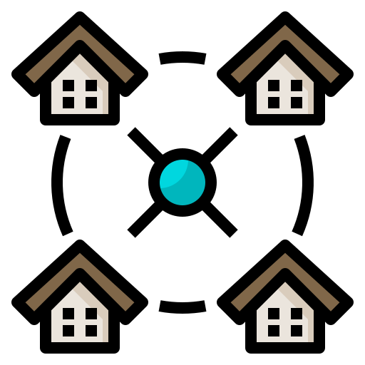
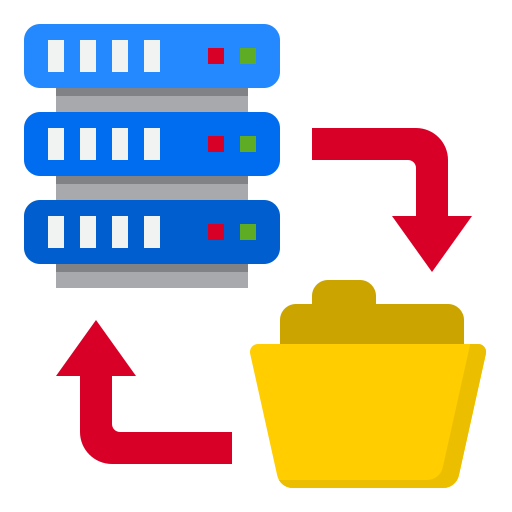

Mainframe Computing
Mainframe computer which first came into existence in 1951 was high-performance computer, it was responsible for handling large data... It allowed multiple users to access a central computer through access points or terminals. However, due to the costs of purchasing and maintaining a mainframe computer, Mainframe Computing is not practical for many people or organizations at that time
Virtualization
Before Cluster Computing was developed. The concepts of virtualization was introduced. It is the process of running a virtual instance of a computer..., an operating system, a storage device or any other computing resource in an abstracted layer over existing operating system and hardware. It is a key technology used in Cloud Computing. It is thebasis of major Cloud Computing services nowadays.
Cluster Computing
In 70s and 80s of nineteenth century, Cluster Computing came as an alternative to Mainframe Computing... Cluster Computing is the process of sharing the computation tasks among multiple computers or machines in the cluster through the connection between them.
Grid Computing
In the 1990s, a new model was presented, that was Grid Computing. It is an architecture that combines many computers placed at entirely different locations... and these all are connected via the Internet. This removed the geographical restrictions between computers in the network. But another problem emerged, that was low availability of high bandwidth led to unstable connection in the network.
Web 2.0
Web 2.0 is the interface through which the Cloud Computing services interact withthe clients... It was because of Web 2.0 that led to the improvement of many web pages, increased the flexibility among them and especially the growth of social media, which isvery popular nowadays.
Service Orientation
Service Orientation (or Service-oriented Computing (SoC)) is a design paradigm for computer software in the form of services... It’s the core reference model for Cloud Computing systems focus on designing and delivering the best possible service for customers by application components, through a communication protocol over a network. Two important concepts were introduced in this computing model. These were Quality of Service(QoS) and Software as a Service (SaaS).
Utility Computing
Utility Computing is a model in which, through pay-per-use method, customers are provided with computing... resources and infrastructure management as needed with charge for specific usage rather than a flat rate. It's one of the components that make up modern-day Cloud Computing.
Cloud Computing
In 1997, one of the first definitions of Cloud Computing came from Professor Ramnath Chellappa... of Emory University and the University of South California. Cloud Computing was defined as “computing paradigm where the boundaries of computing will be determined by economic rationale rather than technical limits alone.”
MODERN-DAY CLOUD COMPUTING
-
The inception of the modern-day cloud was realised by Amazon Web Services (AWS) launching its public cloud in 2002. While more websites and workflows were starting to find a place in the cloud, the next decade saw two generations of the cloud.
-
The traditional definition of what the cloud is was realised during the first generation - centralised infrastructure in data centres that host a lot of compute and storage resources. There are several milestones in the first generation cloud.
-
Building base on the first generation cloud, the secondmake a dramatic improvement in both the services and competition between a wide choice of providers
-
Cloud Computing has matured over the past decades at both consumer and enterprise levels. With the advent of the Internet of Things era, billions of devices are connected to the Internet. And more development and applications must be made to fulfil the need of the massive number of users
TYPES OF CLOUD COMPUTING
Public Cloud
The public cloud is defined as the cloud computing services provided by third-party
providers via the public Internet, which is available to anyone who needs to use and
pay for them. They can be free or sold on-demand, allowing customers to purchase only
per usage for the resources they consume... Public cloud have more fast deployment than
on-premises infrastructures and with an easily scalable platform. The security of public
cloud has been concerned over public cloud environments, however, if the provider uses
appropriate security methods, the public cloud can be as secure as managed private cloud
implementation.
Private Cloud
The private cloud (internal cloud or corporate cloud) is defined as computing services
offered either over the Internet or a private internal network and only users allowed can access it. The private cloud offers cloud computing resources used only by a single business
or organization... Private cloud gives businesses many benefits – involves in self-service,
scalability, and elasticity - with the additional control and customization available from
dedicated resources over a computing infrastructure hosted on-premises. Furthermore, a
higher level of security and privacy is delivered through both company firewalls and internal hosting so that third-party providers cannot get access to sensitive data. However,
private cloud require the same staffing, management, and maintenance expenses as traditional datacenter because the company’s IT department is accountable for the cost and
managing the private cloud.
Hybrid Cloud
Hybrid cloud is defined as a computing environment which combines public and private clouds and data and applications are allowed to be shared between them. When an
on-premises datacenter’s capabilities cannot satisfy the computing and processing requirement, businesses can use the cloud to immediately scale capacity up... They can also scale
capacity down in order to handle excess capacity. It allows them to save the time and cost
of purchasing, installing, and maintaining new servers when they don’t need to use.

Community Cloud
Although not as commonly used as the other three models, Community Cloud is
a multi-tenant platform that shares infrastructure between several organizations within
the same industry or field with specific concerns in terms of security, compliance, and
performance...
In essence, a community cloud is a private cloud acts as much like a public cloud. The
number of users is more than private, but not as much as public cloud. The platform is
managed privately but the services are commonly used by government agencies, healthcare
organizations, financial services firms, and other professional communities.
CLOUD SERVICES

Infrastructure as a Service (IaaS)
IaaS is a cloud computing service model that delivers fundamental infrastructure elements to consumers on-demand, over the internet, and on a pay-as-you-go basis. These
infrastructure elements include compute, network, storage hardware as well as other components and software. IaaS enables end users to scale and shrink resources on an as-needed
basis, instead of buying all the servers and equipment for storage and networking, users
can outsource the resource from a third-party provider, so that unnecessary infrastructure is reduced.
- Reduce expenses: businesses only purchase for what they want to use. Buying, managing and maintaining their infrastructure are service providers’ responsibility.
- Improve business continuity: IaaS provides a higher proportion of operation time and more disaster recovery options than on-premises deployments.
- Accelerate innovation: IaaS makes it easy and fast for businesses to ramp up their infrastructure and scale up or down if they need.
- Take advantages of the latest technologies: Many cloud providers promptly update their new software and hardware including artificial intelligence and machine learning frameworks.
- Speed provisioning: with IaaS, application environments are entirely offered in a short time
- Focus on core business: organizations can give DevOps and other teams permission to access their infrastructure. Therefore, they will be able to test and fix immediately without postponement.
- Scale faster: More resources are required by companies during peak workloads. However, the infrastructure can scale quickly with the support of IaaS.
Platform as a Service (PaaS)
PaaS provides the infrastructure and middleware components that give developers, IT
administrators, and end users permission to build, develop and manage mobile and web
applications.
PaaS offers ready-to-use programming components that involve in many advanced
technologies such as artificial intelligence (AI), Internet of Things (IoT), blockchain. They
enable developers to add new features to their applications. Application development
tools are also included to assist the creation of mobile and web software. For example,
Kubernetes, Android Studio, Xamarin, etc.
- IT efficiency: PaaS increases resources delivery, intensify automation, provide scalability and standardizes deployments.
- Business innovation: PaaS enable IT to be more responsive to business chance such as improve user experiences, more trusted transactions, faster release cycles and data analytics.
- Risk reduction: PaaS strengthens security, quickens responses and decreases downtime whereas prevents data loss and recovers data.

Software as a Service (SaaS)
Software as a service (SaaS) is a cloud-based software delivery model where cloud application software is developed and maintained, updated automatically and always available
to its customers via the internet on a pay-as-you-go basis by the cloud provider. Users
don’t need to manage the hardware, middleware and security. Therefore, SaaS customers
can significantly lower their costs.
- Lower up front costs: SaaS Customers don’t need extra hardware or middleware, so that it lowers the installation and implementation costs.
- Predictable ongoing costs: get rid of unpredictable costs of managing, patching, and updating
- Rapid deployment: with SaaS, users will get the latest innovations and updates. Software will be patched automatically.
- On-demand scalability: SaaS offers immediate scalability to satisfy growing data or transactional demands.
CLOUD PLATFORMS
Front-End Platform
The front-end infrastructure comprises of what the users interact with. It is combination of various components that offer the user interface. The front-end cloud infrastructure
mainly consists of local networks, web browsers, and web applications.
- User Interface: It is everything that end-user access in order to interact with the cloud. Notable examples of cloud-based UIs are Gmail, Google Drive.
- Software: It is the software that runs on the user’s end. Front-end software primarily comprises of client-side applications and browsers.
- Client Device or Network: This comprises of the equipment at the user’s end, such as PC or mobile devices. However, they are not required to be capable of processing heavy computations since it is the cloud’s responsibility
Back-End Platform
The back-end architecture is the engine for the front-end infrastructure. It includes
hardware and storage located on a remote server of the cloud service providers.
- Application: It refers to the user interface that sends queries from the end-users. In short, it is a back-end layer that takes care of the user’s requests.
- Service: The service handles the computations and tasks that runs on the Cloud Computing system. Service executes the tasks on the cloud run-time.
- Storage: It is where data is stored on the cloud. In a Cloud Computing system, in order to run services, the software partitions the storage drives such as SSD and HDD
- Infrastructure: The infrastructure includes CPU, GPU, network cards, accelerator cards, etc, in order to power all the services running on the cloud.
- Management: It includes software that allocates resources between tasks in order to maintain efficiency in the cloud servers. In short, it is the software that coordinate between the front-end and the back-end.
- Security: It is one of the key aspect of the back-end architecture. Back-ups and firewalls are two of the crucial parts of the security implementations of the cloud system.
ADVANTAGES
Economical
This is a great advantage of Cloud Computing that businesses can
save a lot of costs on physical hardware, also, there is no need of large IT teams
solving cloud data center operations, because everything is implemented by Cloud
provider.

High Performance
Cloud computing allows users to perform service operations
quickly with just a few clicks to get the necessary resources almost instantly.
Flexibility
Cloud computing allows online access via smartphones and devices,
this feature ensures work continuity when an individual in the company who lives
far away or has a too thick schedule can keep instantly up- to-date with clients and
coworkers.
With just a good internet connection, all the resources will be continuously stored
and synchronized, creating good conditions to save time for IT staff, significantly
reducing the workload.

Productivity
Collaboration have never been easier with the ability to access data and real-time changes instantly with the help of cloud systems.
In addition, it also provides the ability to support employees working in multiple
geographic locations to collaborate effectively with high security.

Easy Management and Backup
Enterprises today are very concerned
with their sensitive information, so Cloud has brought a great benefit by making it
easy to know which users with which level can access what kind of data.
Although with excellent data storage and security, there may still be emergencies
such as your computer crashing or unexpected power outages, Cloud-based services
offer data backup feature which prevents unwanted data loss.

Automatic Software Integration
With this cloud technology, software applications will be very easy to customize, which helps users choose the type of cloud
service that suits their needs.

Data Security
Cloud storage providers already have basic and essential protections such as authentication, access control, and encryption in place. For added
security, third-party services that offers cloud security are needed to prevent intrusion into their sensitive information in the cloud.
NOTEWORTHY ASPECT

Cloud Providers
To get the best reliability and performance for ones business, it’s important to have a
good understanding of the cloud provider, and that provider must understand the industry
in which you are working. Such knowledge and understanding can make a huge difference.
However, if the cloud carrier is able to encrypt data, they can also do the opposite, so
make sure that Cloud’s provider complies with privacy and security in your industry.

Bandwidth Limitations
Another noteworthy factor is the Cloud’s ability to transmit and recover data over
lines, enterprises always have the need to move data from local networks to a wide area
network and it can takes hours, days, or months. Thus, the cost of bandwidth upgrades
is a factor to consider.
Security
Security is one of the key aspect of cloud adoption, measures must be devised in
fending off increasingly complex attacks. Still, cloud security is not simply defensive protocols, it also meant to enable greater agility and growth while ensuring a constant secure
protection.